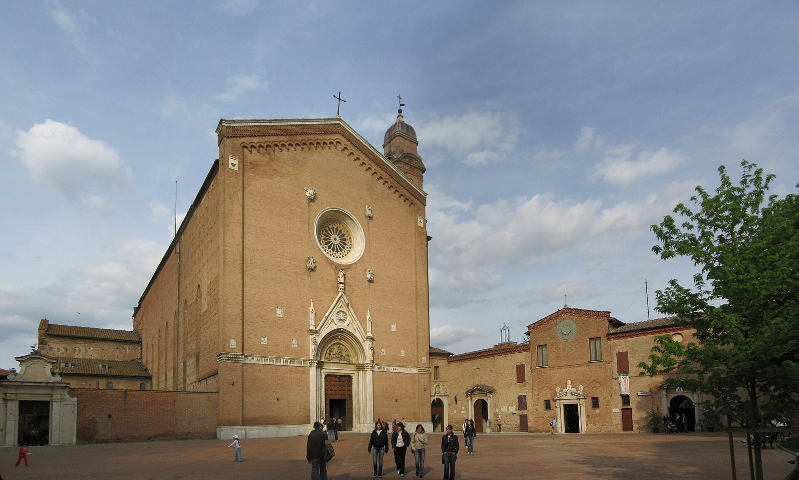
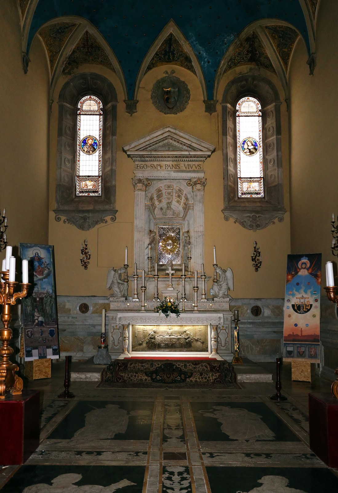
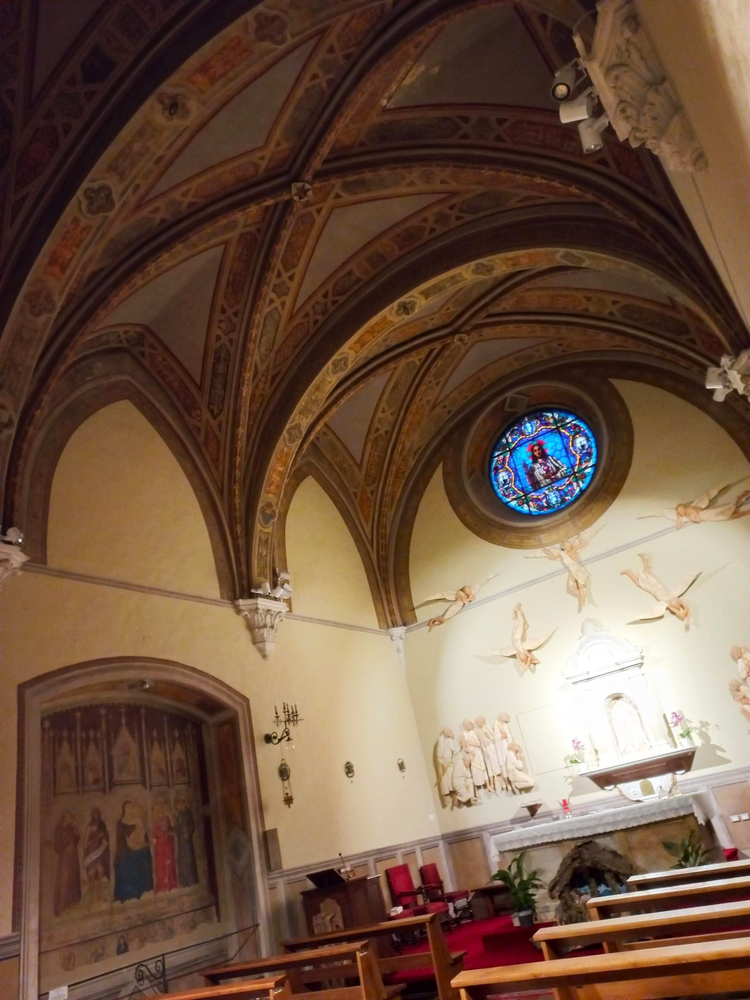
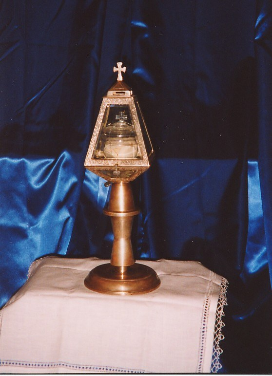
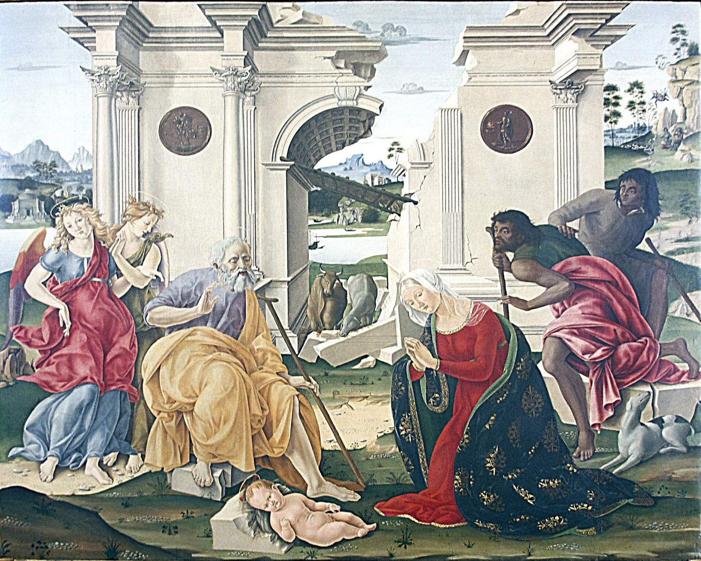

Gryffindor stitched by Marku1988 This image was created with… · Wikimedia Commons · CC BY-SA 3.0As Hóstias de Siena, intactas desde 1730
Reconhecido pela Santa Igreja CatólicaO RELATO
O FATO
Na noite de 14 de agosto de 1730, véspera da Assunção, ladrões entraram na igreja de São Francisco, em Siena, e levaram o cibório de ouro com as hóstias consagradas. Na manhã seguinte, na hora da comunhão, o sacerdote abriu o sacrário e o encontrou vazio.
Em 17 de agosto, as hóstias apareceram na caixa de esmolas da igreja de Santa Maria in Provenzano, cobertas de pó e teias. Contaram 351 partículas: 348 inteiras e seis metades, o número que os frades haviam estimado. O arcebispo Alessandro Zondadari as levou em procissão de volta a São Francisco.
A INVESTIGAÇÃO
Os frades não consumiram as hóstias: esperavam que se deteriorassem. Não se deterioraram. Em 1780, o ministro geral dos Franciscanos Conventuais, frei Carlo Vipera, as examinou e proibiu novas distribuições. Em 1789, uma comissão do arcebispo Tiberio Borghesi as viu intactas ao microscópio; hóstias comuns, seladas em lata por dez anos, apodreceram.
Em 1914, com autorização de São Pio X, o químico Siro Grimaldi analisou as partículas: sem fermentação, sem microrganismos. Chamou-as "exemplo de perfeita conservação". Novos exames em 1922 e de 1950 a 1952.
AS RELÍQUIAS HOJE
Em 10 de setembro de 2014, o arcebispo de Siena, Antonio Buoncristiani, presidiu a nova ricognição, por decreto de 19 de agosto de 2014 e com parecer prévio da Congregação para a Doutrina da Fé. A ata registra 225 hóstias inteiras e 13 fragmentos, finas, com os sinais eucarísticos visíveis. O número era o mesmo de 1952.
As partículas ficam num cilindro de cristal, na Basílica de São Francisco: capela Piccolomini no verão, Martinozzi no inverno. Expostas no dia 17 de cada mês, saem em procissão em Corpus Christi. Em 1980, João Paulo II as adorou.
O QUE A SANTA IGREJA CATÓLICA DECIDIU
A Santa Igreja Católica mantém o culto público das Sacre Particole desde 1730, sob a autoridade dos arcebispos de Siena. Exames canônicos em 1780, 1789, 1914 (autorizado por São Pio X), 1922, 1950 a 1952 e 2014 (decreto arquidiocesano nº 52/2014 D, com parecer da Congregação para a Doutrina da Fé) registraram as hóstias intactas. Em 14 de setembro de 1980, na Catedral de Siena, João Paulo II falou da adoração das "santíssimas partículas, conservadas na Basílica de São Francisco há dois séculos e meio". O caso integra o catálogo de milagres eucarísticos de São Carlo Acutis.
FOTOS













Imagens do Wikimedia Commons, em domínio público ou Creative Commons, com crédito ao autor.
VÍDEOS
 ▶Siena - Basilica di San Francesco (Il Miracolo Eucaristico delle Sacre Particole)Renzo Manganotti · YouTube
▶Siena - Basilica di San Francesco (Il Miracolo Eucaristico delle Sacre Particole)Renzo Manganotti · YouTube ▶Il miracolo eucaristico di SienaTv2000it · YouTube
▶Il miracolo eucaristico di SienaTv2000it · YouTubeVídeos públicos do YouTube, de canais de terceiros. Abrem no YouTube.
COMO VISITAR
Basílica de São Francisco
Siena, Itália
FONTES
- Arquidiocese de Siena (arcidiocesi.siena.it) — Verbale della ricognizione delle Sacre Particole, 10 de setembro de 2014
- Vatican.va — João Paulo II, discurso ao clero e aos religiosos, Catedral de Siena, 14 de setembro de 1980
- Catálogo dos Milagres Eucarísticos (miracolieucaristici.org) — ficha Siena, Itália, 1730
- Real Presence Association (therealpresence.org) — Eucharistic Miracle of Siena, 1730
VER O POST NO INSTAGRAMTODOS OS MILAGRES NO MAPA